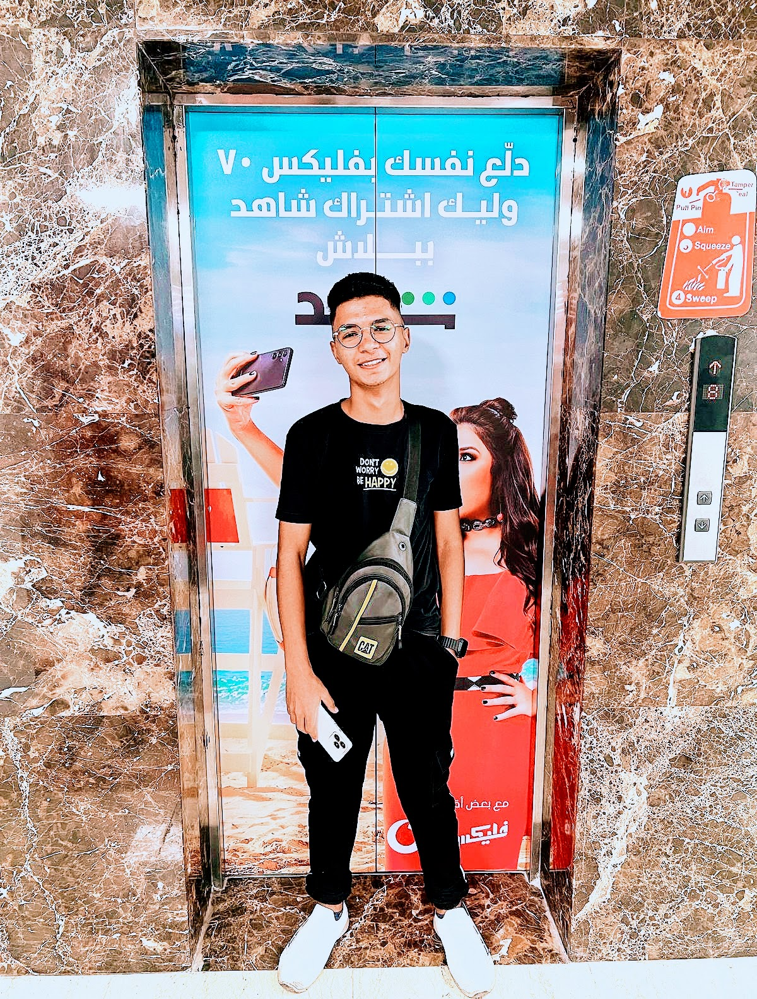

Mostafa Khaled

Summary
I am aprogrammer and web designer with extensive experience in building
and developing high-performance websites and web applications. I work with
modern technologies like React for front-end development and Node.js for
server and back-end development.
Education
🎓 Madina Academy
- Specialization: Management Information Systems (MIS)
- Year: Currently in the third year.
Work Experience
- 💼 iSON Xperiences - Egypt
Nov 2023 - Nov 2024
-
Responsibilities: Assisted customers with inquiries and technical
support for Vodafone services.
- Role: Vodafone Egypt (888 Account)
- Duration: 1 year
- 💼 GoChat247 - Egypt
Vodafone Egypt
- Role: Vodafone Web-Chat CST
- Location: Vodafone Main Building, Zahraa El Maadi
-
Responsibilities: Provided chat-based support for Vodafone customers,
resolving issues efficiently.
- 💻 Freelancer on Mostaql Platform
Projects:
-
Rased Platform: Developed a motivational system for students for a
Saudi-based platform.
-
App Store: Built a custom application store for client-specific needs.
Skills
-
💡 Programming and Web Design: Proficient in creating dynamic and
responsive websites. 🎨
-
Photoshop and Video Editing: Experienced in graphic design and video
production. 🛠️
-
Computer Maintenance: Skilled in diagnosing and repairing hardware and
software issues.
- Customer service: ⭐️⭐️⭐️⭐️⭐️
- Microsoft Office Suite: ⭐️⭐️⭐️
- Organizational skills: ⭐️⭐️⭐️⭐️
Other